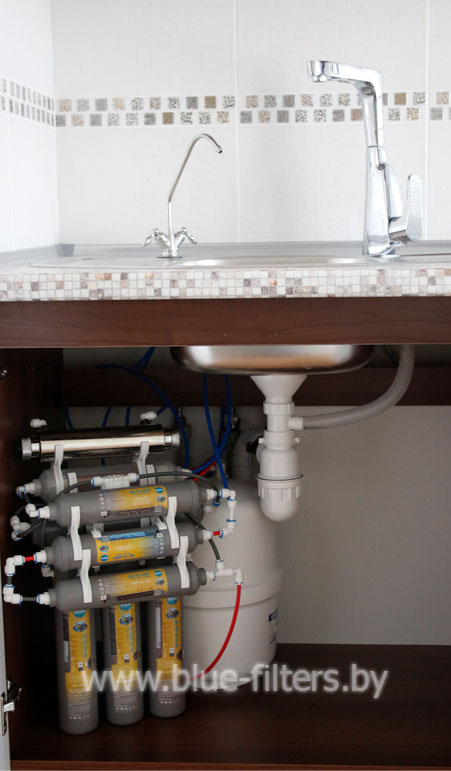
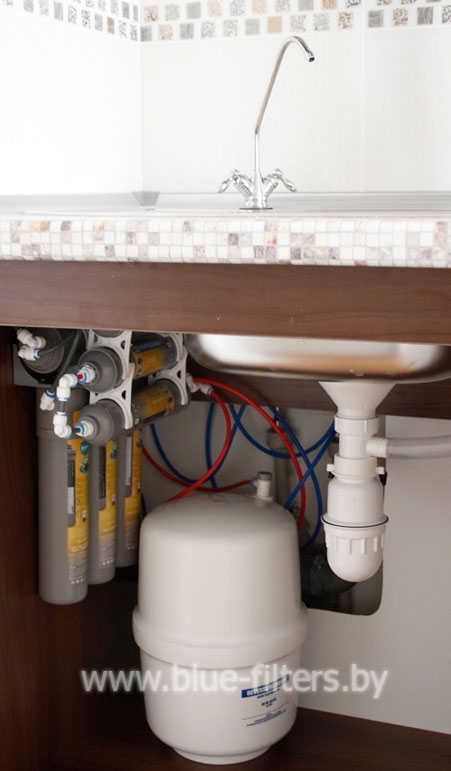

- Насыщение воды полезными минералами
- Встраивается в любую кухню
- Доставка по Беларуси
Фотогалерея

- 
- 
- 6-ступенчатая система фильтрации с обратным осмосом.
- Двойной керамический кран.
- Насыщение воды полезными минералами.
- Абсолютное умягчение, удаление хлора и железа.
- Быстрая замена картриджей.
- Накопительный резервуар.
- Компактный размер.
- Гарантия 5 лет.
Фильтр для воды Bluefilters NL-6 способен не просто очистить воду от всех известных загрязнений, но и насытить ее минералами. Для здоровья человека минеральные вещества жизненно необходимы.
Благодаря блоку-минерализатору, в котором содержатся природные соли натрия, калия, кальция и магния, вода становится полезной, а вкус более приятным. Минерализованную воду можно пить в неограниченном количестве и ежедневно, т.к. общая минерализация не превышает 0,2 г/л.
В комплекте к системе очистки воды NL-6 идет двойной керамический кран для питьевой воды. Это значит, что для приготовления пищи, напитков следует использовать деминерализованную воду, а пить в сыром виде – полезную, насыщенную минералами.
Изготовитель: Amii Sp. z o.o., Poland, ul. Grabinska 23, 92-780 Lodz.
Импортер, официальный представитель, официальный сервисный центр в Беларуси: ООО «Блюфильтерс», Беларусь, Минск, ул. Громова 28-320.